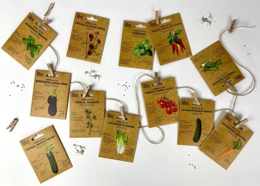
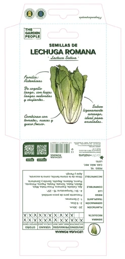
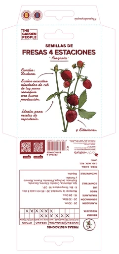
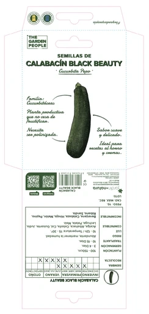
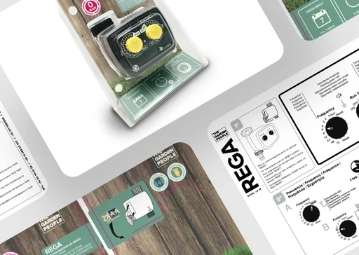
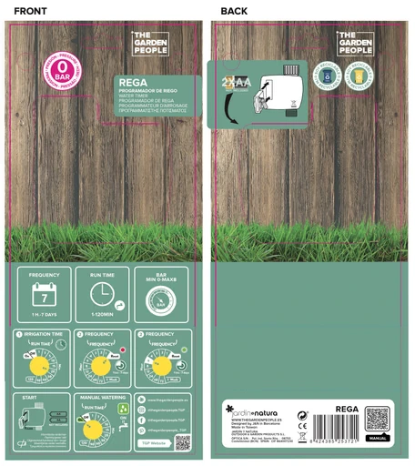
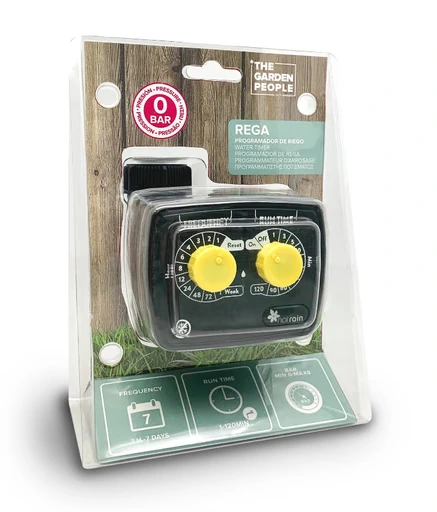
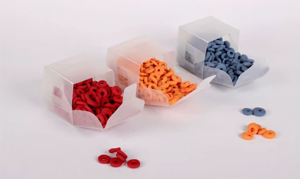
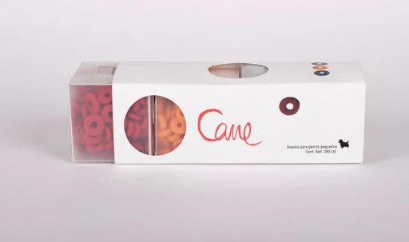
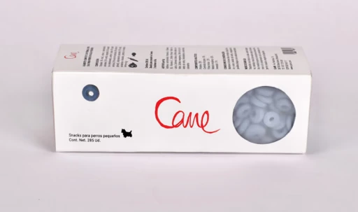

Sobres de semillas
Diseño de sobres de semillas ilustrados en papel kraft para una empresa de jardinería, The Garden People.




Esto no es un caso de estudio: es una pincelada de proyectos que hice como diseñadora gráfica e ilustradora y que forman parte de mi trayectoria.
Diseño de sobres de semillas ilustrados en papel kraft para una empresa de jardinería, The Garden People.




Blíster de plástico para el programador de riego de una empresa de jardinería.



Creación de marca y packaging para una empresa ficticia de snacks para perros (proyecto de estudios en ELISAVA).


